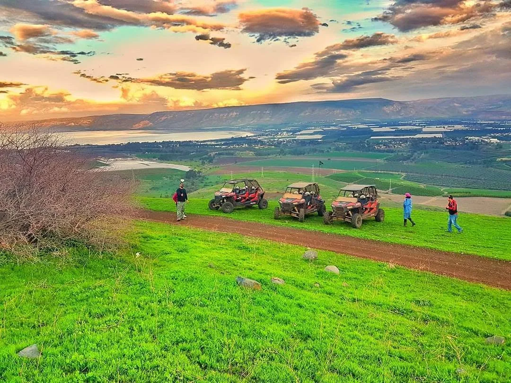

// SINCE 2013איטליה קטנה,
איטליה קטנה,
בגליל.
טוסקנה חוויות שטח הוקמה ב‑2013 במושבה יבנאל, בין כפר תבור לכנרת, מתוך אהבה לחיבור הישיר בין אדם לטבע. אפיק והצוות מכירים כל שביל, כל תצפית וכל פינת חמד נסתרת בבקעה.
אנחנו מקום קטן ואישי, לא פס ייצור. המסלול מותאם לכם, המדריך איתכם לאורך כל הדרך, והמטרה אחת: שתחזרו הביתה עם חיוך, אבק וזיכרון טוב.
אפיק והצוותטוסקנה חוויות שטח, יבנאל